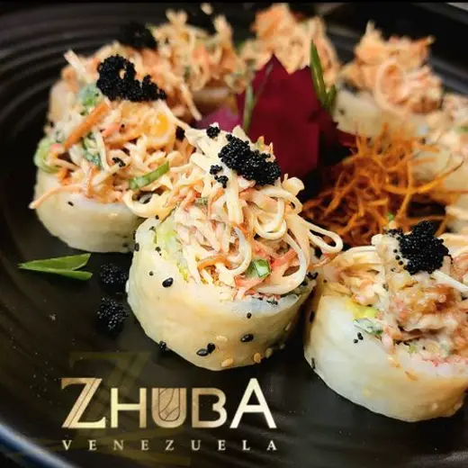
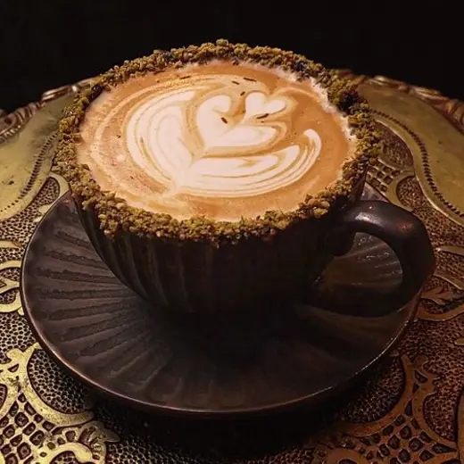
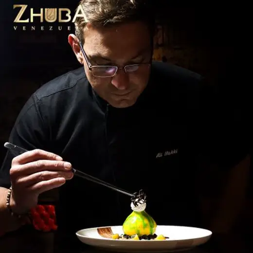
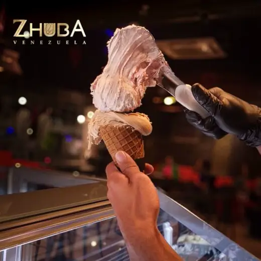

ZHUBA Restaurant
Cocina asiática con acento nikkei y tailandés. Salmón noruego, atún saku, escolar y anguila en la barra fría; el wok, al fuego.
Domingo a miércoles, 12:00 m. a 12:00 a. m.
Jueves a sábado, hasta la 1:00 a. m.
Restaurante y café en La Floresta, Maracay
Barra fría con salmón noruego y atún saku, fuego vivo en el wok, y al lado un café con pastelería fina y gelato artesanal.
4,8 en Google · 768 reseñas · Abierto todos los días desde las 12:00 m.




CEO y chef-curador
Bajo su visión, ZHUBA es un solo complejo con cuatro oficios: restaurante de alta gama, café, pastelería fina y un laboratorio de gelato artesanal. Cocina de autor que cruza Asia con el Mediterráneo.
El salón principal y el rooftop se renovaron hace poco: travertino, mármol y luz cálida, ordenados según los principios del Feng Shui.
Cocina asiática con acento nikkei y tailandés. Salmón noruego, atún saku, escolar y anguila en la barra fría; el wok, al fuego.
Domingo a miércoles, 12:00 m. a 12:00 a. m.
Jueves a sábado, hasta la 1:00 a. m.

Waffle hongkonesa hecha al momento, brioche siciliana rellena, alta pastelería con ingredientes italianos y paninis prensados al instante.
Domingo a miércoles, 12:00 m. a 12:00 a. m.
Jueves a sábado, hasta la 1:00 a. m.
“Tenía 11 años sin venir a Venezuela, amante del sushi, y me recomendaron Zhuba. Sin duda…”
17 Calle Los Clubes, casa nro. 10
Urb. La Floresta, Maracay
Todos los días desde las 12:00 m.
Hasta la 1:00 a. m. de jueves a sábado